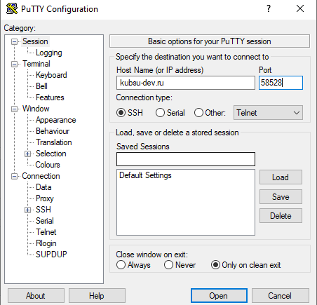

Ввел данные пользователя и получил доступ

Вход на сервер kubsu-dev.ru через PuTTY, введя адрес и порт сервера
Ввел данные пользователя и получил доступ
После успешного входа по ходу задания запросил ip адрес серерва kubsu.ru

С помощью команды nslookup узнал A-записи и MX-записи домена kubsu.ru и kubsu-dev.ru

С помощью команды whois узнал дату регистрации домена kubsu.ru и kubsu-dev.ru

C помощью команды ssh-keygen получили два ключа, открытый и закрытый

После формирования ключа мы вставили его в github, после этого через git clone клонировали репозиторий

С помощью FileZilla соединились с учебным сервером с моим логином и паролем по протоколу SFTP и скопировали на локальный компьютер файлы задания из каталога www